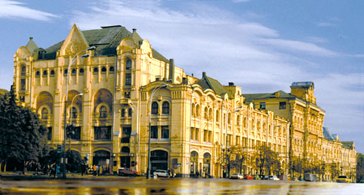

Политехнический музей
Политехнический музей – национальный музей истории науки и техники, один из крупнейших научно-технических музеев мира.
В декабре 1991 г. музей был объявлен федеральной собственностью как особо ценный объект российского национального культурного наследия.
Музей был создан в 1872 г по инициативе Российских ученых-просветителей, членов Императорского Общества любителей естествознания, антропологии и этнографии. Здание музея расположенное в самом центре Москвы, построено по проекту архитектора И.А.Монигетти.
Сегодня Политехнический музей хранит свыше 170 тыс. музейных предметов, около 100 музейных коллекций, многие из которых уникальны. Экспозиция музея занимает площадь около 10, 5 тыс. кв. м., в 65 залах музея представлены самые различные области техники — Горное дело, Металлургия, Химическая технология, Автоматика и Вычислительная техника, Связь, Оптика, Метеорология, Космонавтика, Энергетика, Транспорт.
Ежегодно музей принимает около 450 тыс. посетителей.
Музей является научно-методическим центром музееведения, выполняет функции головного музея, сохраняющего и изучающего музейный фонд РФ в области науки и техники. Поэтому организация для технических музеев страны научных конференций, семинаров в целях обмена опытом является одним из приоритетных направлений деятельности музея. Политехнический музей создает обширную базу по проблемам научно-технического музееведения, доступную для других музеев.
